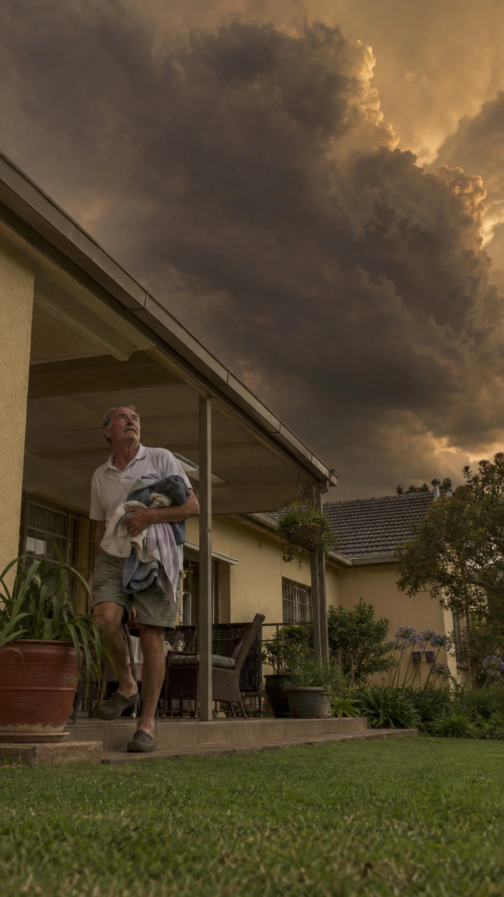

Strand, Tuesday 22 Sept, 18:34: this photograph ran under “Partly cloudy.” on a 30° day, captioned “The day never warmed up…”. It is filed in cloudy, which also serves partly-cloudy and might-rain. Since 23 Sept it is benched: it no longer appears anywhere, and cloudy Tuesday dusk shows the cyclist instead. Nothing moves until you say yes.
The photograph (sha1 018a0573e433)

Filed now
cloudy · dusk · Tuesday · all four weeks
Its four lines go with it
- The sun clocked out without saying bye. Rude, but relatable.
Die son het uitgeklok sonder om te groet. Onbeskof, maar relatable.
- The dog is wearing a jersey, which is all the forecast anybody here needs.
Die hond dra 'n trui, en dis al die voorspelling wat enigiemand hier nodig het.
- Grey sky, grey jersey: the whole stoep is colour-coordinated with the weather.
Grys lug, grys trui: die hele stoep pas by die weer.
- The day never warmed up, and one resident has stopped waiting for it to.
Die dag het nooit warm geword nie, en een inwoner het opgehou wag.
Proposed cold slot
cold · dusk · Tuesday · weeks 2 and 4
The same day and time it held in cloudy, and the same A-weeks it was ruled for (cloudy v3 placed it at weeks 2 and 4).
What it displaces
This frosted pass (sha256 6c75084d23db) comes out of weeks 2 and 4 and keeps weeks 1 and 3. Nothing leaves the library. Its one line goes with it: “The sun is leaving the mountains one shelf at a time.”
Cloudy Tuesday dusk, meanwhile
Benched slots fall back to the picker's own week-collapse photo: this cyclist, already Monday's cloudy dusk. On a yes, the four cloudy Tuesday-dusk slots keep showing him until a new cloudy dusk photograph is placed there; on a no, the dog comes back to cloudy.